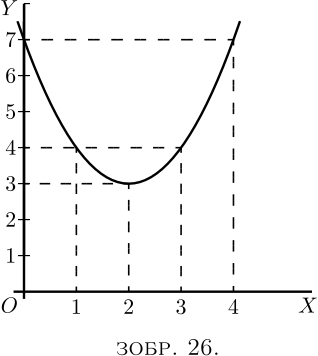
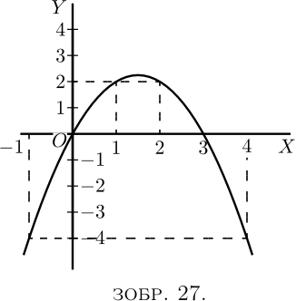
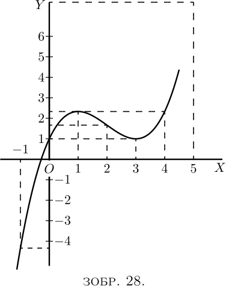
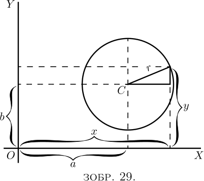
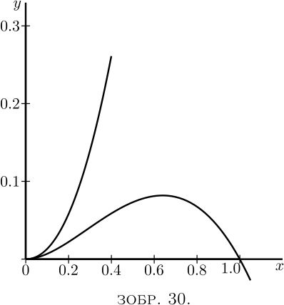

Одне з головних застосувань процесу диференціювання полягає в тому, щоб з’ясувати, за яких умов значення диференційованої речі стає максимальним або мінімальним. Це часто надзвичайно важливо в інженерних питаннях, де найбільш бажано знати, які умови зведуть вартість роботи до мінімуму або зроблять ефективність максимальною.
Щоб почати з конкретного випадку, візьмемо рівняння \[ y = x^2 - 4x + 7. \]

Присвоюючи кілька послідовних значень $x$ і знаходячи відповідні значення $y$, ми можемо легко побачити, що рівняння представляє криву з мінімумом.
| $x$ | $ 0$ | $ 1 $ | $2 $ | $3 $ | $4$ | $ 5$ |
| $y$ | $ 7$ | $ 4 $ | $3 $ | $4 $ | $7$ | $ 12$ |
Ці значення нанесено на графік на Зображенні 26, яке показує, що $y$ має очевидно мінімальне значення $3$, коли $x$ дорівнює $2$. Але чи впевнені ви, що мінімум виникає у $2$, а не у $2 \tfrac{1}{4}$ чи $1 \tfrac{3}{4}$?
Звичайно, з будь-яким алгебраїчним виразом можна було б розрахувати багато значень і таким чином поступово прийти до конкретного значення, яке може бути максимальним або мінімальним.

Ось інший приклад:
Let $y = 3x - x^2$.
Обчислимо кілька значень таким чином:
| $x$ | $-1$ | $0$ | $1$ | $2$ | $3$ | $4$ | $5$ |
| $y$ | $-4$ | $0$ | $2$ | $2$ | $0$ | $-4$ | $-10$ |
Побудуємо ці значення, як на Зображенні 27.
Буде очевидно, що максимум буде десь між $x = 1$ і $x = 2$; і ця річ виглядає ніби максимальне значення $y$ має становити близько $2 \tfrac{1}{4}$. Спробуємо деякі проміжні значення. Якщо $x = 1 \tfrac{1}{4}$, $y = 2.187$; якщо $x = 1 \tfrac{1}{2}$, $y = 2.25$; якщо $x = 1.6$, $y = 2.24$. Як ми можемо бути впевнені, що $2.25$ є справжнім максимумом, або що максимум виникає саме тоді, коли $x = 1 \tfrac{1}{2}$?
Зараз це може здатися жонглюванням, щоб переконати вас, що існує спосіб, за допомогою якого можна отримати максимальне (або мінімальне) значення, не роблячи багатьох попередніх проб чи припущень. І цей спосіб залежить від диференціювання. Перегляньте попередню сторінку (тут), на Зображення 14 і Зображення 15, і ви побачите, що щоразу, коли крива досягає максимальної або мінімальної висоти, у цій точці її $\dfrac{dy}{dx} = 0$. Це дає нам підказку до потрібного засобу: коли перед вами постає рівняння, і ви хочете знайти те значення $x$, яке зробить його $y$ мінімумом (або максимумом), спочатку продиференціюйте рівняння, а після цього запишіть його $\dfrac{dy}{dx}$ як таке, що дорівнює нулю, і знайдіть $x$, розв'язавши рівняння. Підставте це конкретне значення $x$ до початкового рівняння, і тоді ви отримаєте необхідне значення $y$. Цей процес зазвичай називають «прирівнюванням до нуля».
Щоб побачити, як просто це працює, візьмемо приклад, з якого починається цей розділ, а саме \[ y = x^2 - 4x + 7. \] Диференціюючи, отримуємо: \[ \dfrac{dy}{dx} = 2x - 4. \] Тепер прирівняємо це до нуля, таким чином: \[ 2x - 4 = 0. \] Розв’язуючи це рівняння для $x$, ми отримуємо: \begin{align*} 2x &= 4, \\ x &= 2. \end{align*}
Тепер ми знаємо, що максимум (або мінімум) настане саме тоді, коли $x=2$.
Додавши значення $x=2$ до початкового рівняння, ми отримаємо \begin{align*} y &= 2^2 - (4×2) + 7 \\ &= 4 - 8 + 7 \\ &= 3. \end{align*}
Тепер подивіться на Зображення 26, і ви побачите, що мінімум настає, коли $x = 2$, і цей мінімум $y = 3$.
Спробуємо другий приклад (Зображення 24), що є \begin{align*} y &= 3x - x^2. \\ \text{диференціюючи,}\; \frac{dy}{dx} &= 3 - 2x. \\ \end{align*} Прирівнювання до нуля, \begin{align*} 3 - 2x &= 0, \\ \text{звідки}\; x &= 1 \tfrac{1}{2}; \\ \end{align*} і підставивши це значення $x$ до початкового рівняння, ми знаходимо: \begin{align*} y &= 4 \tfrac{1}{2} - (1 \tfrac{1} {2} × 1 \tfrac{1}{2}), \\ y &= 2 \tfrac{1}{4}. \end{align*} Це дає нам саме ту інформацію, щодо якої метод спроби багатьох значень залишав нас невпевненими.
Тепер, перш ніж ми перейдемо до будь-яких подальших випадків, ми маємо зробити два зауваження. Коли вам говорять прирівняти $\dfrac{dy}{dx}$ до нуля, ви спочатку відчуваєте (тобто якщо у вас є хоч якийсь розум) якесь обурення, тому що ви знаєте, що $\dfrac{dy} {dx}$ має різноманітні значення в різних частинах кривої, залежно від того, нахилена вона вгору чи вниз. Отже, коли вам раптом кажуть написати \[ \frac{dy}{dx} = 0, \] ви обурюєтеся цим і відчуваєте схильність сказати, що це не може бути правдою. Тож, вам треба зрозуміти істотну різницю між «рівнянням» і «рівнянням умови». Зазвичай ви маєте справу з рівняннями, які є завжди істинними. Але в деяких випадках, прикладом яких є даний момент, вам доводиться записувати рівняння, які не обов’язково є істинними, але є істинними лише при виконанні певних умов; і ви записуєте їх, щоб, розв’язуючи, знайти ці умови. Зараз ми хочемо знайти конкретне значення $x$, коли крива не має нахилу ані вгору, ані вниз, тобто в тому місці, де $\dfrac{dy}{dx} = 0$. Тож, записуючи $\dfrac{dy}{dx} = 0$ ми не кажемо, що ця похідна завжди $=0$; але ми це записуємо як умову щоб побачити, скільки і яких вийде $x$, коли $\dfrac{dy}{dx}$ дорівнює нулю.
Другим зауваженням є те, яке (якщо у вас є хоч якийсь розум) ви, напевно, вже зробили: а саме, що цей широко хвалений процес прирівнювання до нуля зовсім не дає вам зрозуміти, чи $x$, який ви таким чином знайдете, дає максимальне значення $y$ або мінімальне. Це цілком так. Цей метод сам по собі не розрізняє; він знаходить для вас правильне значення $x$, але залишає вам самотужки з’ясувати, чи є відповідний $y$ максимумом чи мінімумом. Звичайно, якщо ви побудували криву, ви вже знаєте відповідь на це.
Наприклад, візьмемо рівняння: \[ y = 4x + \frac{1}{x}. \]
Не замислюючись над тим, якій кривій воно відповідає, диференціюйте його та прирівняйте до нуля: \begin{align*} \frac{dy}{dx} &= 4 - x^{-2} = 4 - \frac{1} {x^2} = 0; \\ \text{ звідки}\; x &= \tfrac{1}{2}; \\ \end{align*} і, підставивши це значення, \begin{align*} y &= 4 \end{align*} буде або максимумом, або мінімумом. Але чим саме? Пізніше вам буде наданий спосіб, що залежить від другої похідної (див. Розділ XII.). Але зараз буде достатньо, якщо ви просто спробуєте будь-яке інше значення $x$, яке трохи відрізняється від знайденого, і подивитеся, чи з цим значенням відповідне значення $y$ є меншим або більшим за вже знайдене.
Спробуємо іншу просту задачу з максимуму і мінімуму. Припустимо, вас попросили розділити будь-яке число на дві частини так, щоб їх добуток був максимальним. Як би ви це зробили, якби не знали трюку прирівнювання до нуля? Я припускаю, це можна зробити за правилом спроби, спроби й ще раз спроби. Нехай числом буде $60$. Ви можете спробувати розрізати його на дві частини та помножити їх разом. Таким чином, $50$ помножити на $10$ дорівнює $500$; $52$ помножити на $8$ дорівнює $416$; $40$ помножити на $20$ дорівнює $800$; $45$ помножити на $15$ це $675$; $30$ помножити на $30$ дорівнює $900$. Це виглядає як максимум: спробуємо порухати його. $31$ помножити на $29$ це $899$, що не дуже добре; і $32$ помножити на $28$ це $896$, що ще гірше. Тож здається, що найбільший добуток вийде, розділивши число на дві рівні частини.
Тепер подивимось, що скаже нам математичний аналіз. Нехай число, яке потрібно розрізати на дві частини, буде зватися $n$. Тоді, якщо $x$ є однією частиною, інша частина буде $n-x$, а добуток буде $x(n-x)$ або $nx-x^2$. Отже, ми пишемо $y=nx-x^2$. Тепер продиференціюємо та прирівняємо до нуля; \begin{align*} \dfrac{dy}{dx} = n - 2x = 0\\ \text{Розв'язуючи для $x$, отримуємо}\; \dfrac{n}{2} = x.\\ \end{align*} Отже, тепер ми знаємо, що яким би не було число $n$, ми маємо розділити його на дві рівні частини, щоб добуток частин був максимальним; і значення цього максимального добутку завжди буде $ = \tfrac{1}{4} n^2$.
Це дуже корисне правило, яке застосовується до будь-якої кількості множників, тому, якщо $m+n+p=$ є постійним числом, $m×n×p$ є максимальним, коли $m=n=p$.
Тестовий приклад.
Давайте відразу застосуємо наші знання до випадку, який ми можемо перевірити. \begin{align*} \text{Нехай } y &= x^2 - x; \end{align*} і давайте визначимо, чи має ця функція максимум чи мінімум; і якщо так, перевіримо, чи це максимум, чи мінімум.
Диференціюючи, ми отримуємо \begin{align*} \frac{dy}{dx} &= 2x - 1. \\ \text{ Прирівнюючи до нуля, отримуємо }\; 2x - 1 &= 0, \\ \text{звідки}\; 2x &= 1, \\ \text{або } \; x &= \tfrac{1}{2}. \end{align*}
Диференціюючи, ми отримуємо \begin{align*} \frac{dy}{dx} &= 2x - 1. \\ \text{ Прирівнюючи до нуля, отримуємо }\; 2x - 1 &= 0, \\ \text{звідки}\; 2x &= 1, \\ \text{або } \; x &= \tfrac{1}{2}. \end{align*}
Тобто, коли $x$ робиться $=\frac{1}{2}$, відповідне значення $y$ буде або максимальним, або мінімальним. Відповідно, підставивши $x=\frac{1}{2}$ у початкове рівняння, ми отримаємо \begin{align*} y &= (\tfrac{1}{2})^2 - \tfrac{1}{ 2}, \\ або \; y &= -\tfrac{1}{4}. \end{align*}
Це максимум чи мінімум? Щоб перевірити це, спробуємо підставити $x$ трохи більший за $\frac{1}{2}$, скажімо, зробити $x=0.6$. Тоді \[ y = (0.6)^2 - 0.6 = 0.36 - 0.6 = -0.24, \] що більше ніж $-0.25$; тобто $y = -0.25$ є мінімумом.
Побудуйте криву для себе та перевірте розрахунки.
Більше прикладів. Найцікавішим прикладом є крива, що має як максимум, так і мінімум. Її рівняння: \begin{align*} y &=\tfrac{1}{3} x^3 - 2x^2 + 3x + 1. \\ Тепер \; \dfrac{dy}{dx} &= x^2 - 4x +3. \end{align*}

Прирівнюючи до нуля, ми отримуємо квадратне рівняння, \[ x^2 - 4x +3 = 0; \] і його розв’язання дає нам два кореня, а саме \[ \left\{ \begin{aligned} x &= 3 \\ x &= 1. \end{aligned} \right. \]
Так, коли $x=3$, $y=1$; і коли $x=1$, $y=2\frac{1}{3}$. Перший з них — мінімум, другий — максимум.
Сама крива може бути побудована (як на Зображенні 28) зі значень, розрахованих з початкового рівняння. Це показано нижче.
| $x$ | $-1$ | $0$ | $1$ | $2$ | $3$ | $4$ | $5$ | $6$ |
| $y$ | $-4\frac{1}{3}$ | $1$ | $2\frac{1}{3}$ | $1\frac{2}{3}$ | $1$ | $2\frac{1}{3}$ | $7\frac{2}{3}$ | $19$ |
Подальшу вправу щодо максимумів і мінімумів надасть наступний приклад:
Рівняння кола радіуса $r$ із центром $C$ у точці з координатами $x=a$, $y=b$, як показано на Зображенні 29, дорівнює: \[ (y-b)^2 + (x-a)^2 = r^2. \]

Це можна перетворити на \[ y = \sqrt{r^2-(x-a)^2} + b. \]
Ми заздалегідь знаємо, просто подивившись на зображення, що коли $x=a$, $y$ матиме або максимальне значення, $b+r$, або мінімальне значення, $b-r$. Але не будемо користуватися цим знанням; давайте приступимо до пошуку того, яке значення $x$ зробить $y$ максимумом або мінімумом, шляхом процесу диференціювання та прирівнювання до нуля.
\begin{align*} \frac{dy}{dx} &= \frac{1}{2} \frac{1}{\sqrt{r^2-(x-a)^2}} × (2a-2x) , \\ \text{що зводиться до}\; \frac{dy}{dx} &= \frac{a-x}{\sqrt{r^2-(x-a)^2}}. \end{align*}
\begin{align*} \frac{dy}{dx} &= \frac{1}{2} \frac{1}{\sqrt{r^2-(x-a)^2}} × (2a-2x) , \\ \text{що зводиться до}\; \frac{dy}{dx} &= \frac{a-x}{\sqrt{r^2-(x-a)^2}}. \end{align*}
Тоді умова максимуму або мінімуму $y$: \[ \frac{a-x}{\sqrt{r^2-(x-a)^2}} = 0. \]
Оскільки жодне значення $x$ не зробить знаменник нескінченним, єдиною умовою для отримання нуля є \begin{align*} x &= a. \end{align*} Підставивши це значення у початкове рівняння для кола, ми знайдемо \begin{align*} y &= \sqrt{r^2}+b; \end{align*} і оскільки корінь $r^2$ дорівнює $+r$ або $-r$, ми маємо два результуючих значення $y$: \begin{align*} \left\{\begin{aligned}y \\ y\end{aligned}\right. & \begin{aligned}= b & + r \\ = b & - r.\end{aligned} \end{align*}
Перший з них – максимум вгорі; другий - мінімум, внизу.
Якщо крива така, що немає місця для максимуму або мінімуму, процес прирівнювання до нуля дасть неможливий результат. Наприклад: \begin{align*} Нехай \; y &= ax^3 + bx + c. \\ Тоді \; \frac{dy}{dx} &= 3ax^2 + b. \end{align*}
Прирівнюючи це до нуля, ми отримуємо $3ax^2 + b = 0$, \[ x^2 = \frac{-b}{3a},\\ \quad\text{і}\quad x = \sqrt{\frac{ -b}{3a}},\;\text{ що неможливо.} \] Тому $y$ не має ні максимуму, ні мінімуму.
Ще декілька опрацьованих прикладів дозволять вам досконало освоїти це найцікавіше та найкорисніше застосування диференціювання.
(1) Якими є сторони прямокутника з найбільшою площею, вписаного в коло радіусом $R$?
Якщо одну сторону назвати $x$, \[ \text{інша сторона} = \sqrt{(\text{діагональ})^2 - x^2}; \] і оскільки діагональ прямокутника обов’язково є діаметром, інша сторона $ = \sqrt{4R^2 - x^2}$.
Тоді площа прямокутника $S = x\sqrt{4R^2 - x^2}$, \[ \frac{dS}{dx} = x × \dfrac{d\left(\sqrt{4R^2 - x ^2}\,\right)}{dx} + \sqrt{4R^2 - x^2} × \dfrac{d(x)}{dx}. \]
Тоді площа прямокутника $S = x\sqrt{4R^2 - x^2}$, \[ \frac{dS}{dx} = x × \dfrac{d\left(\sqrt{4R^2 - x ^2}\,\right)}{dx} + \sqrt{4R^2 - x^2} × \dfrac{d(x)}{dx}. \]
Якщо ви забули, як продиференціювати $\sqrt{4R^2-x^2}$, ось підказка: запишіть $4R^2-x^2=w$ і $y=\sqrt{w}$, і шукайте $\dfrac{dy}{dw}$ і $\dfrac{dw}{dx}$; боріться, і тільки якщо не можете отримати рішення, подивіться тут.
Ви отримаєте \[ \dfrac{dS}{dx} = x × -\dfrac{x}{\sqrt{4R^2 - x^2}} + \sqrt{4R^2 - x^2} = \dfrac {4R^2 - 2x^2}{\sqrt{4R^2 - x^2}}. \]
Ви отримаєте \[ \dfrac{dS}{dx} = x × -\dfrac{x}{\sqrt{4R^2 - x^2}} + \sqrt{4R^2 - x^2} = \dfrac {4R^2 - 2x^2}{\sqrt{4R^2 - x^2}}. \]
Для максимуму або мінімуму ми повинні мати \[ \dfrac{4R^2 - 2x^2}{\sqrt{4R^2 - x^2}} = 0; \] тобто $4R^2 - 2x^2 = 0$ і $x = R\sqrt{2}$.
Інша сторона ${} = \sqrt{4R^2 - 2R^2} = R\sqrt{2}$, тобто дві сторони рівні; фігура — квадрат, сторона якого дорівнює діагоналі квадрата, побудованого на радіусі. У цьому випадку, звичайно, ми маємо справу з максимумом.
(2) Яким буде радіус отвору конічної посудини, похила сторона якої має довжину $l$, коли місткість посудини найбільша?
Якщо $R$ — радіус, а $H$ — відповідна висота, $H = \sqrt{l^2 - R^2}$. \[ \text{Об'єм } V = \pi R^2 × \dfrac{H}{3} = \pi R^2 × \dfrac{\sqrt{l^2 - R^2}}{3}. \]
Діючи, як і в попередній задачі, ми отримуємо \begin{align*} \dfrac{dV}{dR} &= \pi R^2 × -\dfrac{R}{3\sqrt{l^2 - R^2} } + \dfrac{2\pi R}{3} \sqrt{l^2 - R^2} \\ &= \dfrac{2\pi R(l^2 - R^2) - \pi R^3 }{3\sqrt{l^2 - R^2}} = 0 \end{align*} для максимуму або мінімуму.
Діючи, як і в попередній задачі, ми отримуємо \begin{align*} \dfrac{dV}{dR} &= \pi R^2 × -\dfrac{R}{3\sqrt{l^2 - R^2} } + \dfrac{2\pi R}{3} \sqrt{l^2 - R^2} \\ &= \dfrac{2\pi R(l^2 - R^2) - \pi R^3 }{3\sqrt{l^2 - R^2}} = 0 \end{align*} для максимуму або мінімуму.
Або $2\pi R(l^2 - R^2) - \pi R^2 = 0$ і $R = l\sqrt{\tfrac{2}{3}}$, очевидно, для максимуму.
(3) Знайдіть максимуми та мінімуми функції \[ y = \dfrac{x}{4-x} + \dfrac{4-x}{x}. \]
Ми отримуємо \[ \dfrac{dy}{dx} = \dfrac{(4-x)-(-x)}{(4-x)^2} + \dfrac{-x - (4-x)}{ x^2} = 0 \] для максимуму або мінімуму; або \[ \dfrac{4}{(4-x)^2} - \dfrac{4}{x^2} = 0 \quad\text{і}\quad x = 2. \]
Існує лише одне значення, отже, лише один максимум або мінімум. \begin{align*} \text{Для}\quad x &= 2,\phantom{.5}\quad y = 2, \\ \text{для}\quad x &= 1.5,\quad y = 2.27, \\ \text{для}\quad x &= 2.5,\quad y = 2.27; \end{align*} тобто це мінімум. (Повчально побудувати графік функції.)
(4) Знайдіть максимуми та мінімуми функції $y = \sqrt{1+x} + \sqrt{1-x}$. (Буде корисно побудувати графік.)
Диференціювання дає відразу (див. приклад № 1, тут) \[ \dfrac{dy}{dx} = \dfrac{1}{2\sqrt{1+x}} - \dfrac{1}{2\sqrt{1-x}} = 0 \] для максимуму або мінімуму.
Отже, $\sqrt{1+x} = \sqrt{1-x}$ і $x = 0$, єдине рішення
Для $x=0$, $y=2$.
Для $x=±0.5$, $y= 1.932$, тож це максимум.
(5) Знайдіть максимуми та мінімуми функції \[ y = \dfrac{x^2-5}{2x-4}. \]
Маємо \[ \dfrac{dy}{dx} = \dfrac{(2x-4) × 2x - (x^2-5)2}{(2x-4)^2} = 0 \] для максимуму або мінімуму; або \[ \dfrac{2x^2 - 8x + 10}{(2x - 4)^2} = 0; \] або $x^2 - 4x + 5 = 0$; що має два рішення \[ x = \tfrac{5}{2} ± \sqrt{-1}. \]
Оскільки вони є уявними, не існує дійсного значення $x$, для якого $\dfrac{dy}{dx} = 0$; тому немає ні максимуму, ні мінімуму.
(6) Знайдіть максимуми та мінімуми функції \[ (y - x^2)^2 = x^5. \]
Це можна записати як $y = x^2 ± x^{\frac{5}{2}}$. \[ \dfrac{dy}{dx} = 2x ± \tfrac{5}{2} x^{\frac{3}{2}} = 0 \\\quad\text{для максимуму або мінімуму}; \] тобто $x(2 ± \tfrac{5}{2} x^{\frac{1}{2}}) = 0$, що виконується для $x = 0$ і для $2 ± \tfrac{5}{2} x^{\frac{1}{2}} = 0$, тобто для $x=\tfrac{16}{25}$. Отже, є два рішення.
Візьмемо спершу $x = 0$. Якщо $x = -0.5$, $y = 0.25 ± \sqrt[2]{-(.5)^5}$, а якщо $x = +0.5$, $y = 0.25 ± \sqrt[2]{( .5)^5}$. З однієї сторони $y$ є уявним, тобто немає значення $y$, яке можна представити на графіку; графік, таким чином, знаходиться повністю з правої сторони від осі $y$ (див. Зображення 30).
При побудові графіка буде виявлено, що крива йде до початку координат, як якби там був мінімум; але замість того, щоб продовжувати далі чином, яким це було б для мінімуму, вона повертається своїми кроками у зворотному напрямку (утворюючи те, що називається «каспом»). Отже, мінімуму немає, хоча умова мінімуму виконується, а саме $\dfrac{dy}{dx} = 0$. Тому необхідно завжди перевіряти, беручи одне значення з обох сторін.

Тепер, якщо ми візьмемо $x = \tfrac{16}{25} = 0.64$. Коли $x = 0.64$, $y = 0.7373$ і $y = 0.0819$; якщо $x = 0.6$, $y$ стає $0.6389$ і $0.0811$; а якщо $x = 0.7$, $y$ стає $0.8996$ і $0.0804$.
Це показує, що є дві гілки кривої; верхня через максимум не проходить, але нижня - проходить.
(7) Циліндр, висота якого вдвічі більша за радіус основи, збільшується в об’ємі так, що всі його частини завжди знаходяться в однаковій пропорції одна до одної; тобто в будь-який момент циліндр є подібним до вихідного циліндра. Коли радіус основи становить $r$ футів, площа поверхні збільшується зі швидкістю $20$ квадратних дюймів за секунду; з якою швидкістю тоді збільшується його об’єм? \begin{align*} \text{Площа} &= S = 2(\pi r^2)+ 2 \pi r × 2r = 6 \pi r^2.\\ \text{Об'єм} &= V = \pi r^2 × 2r=2 \pi r^3.\\ \frac{dS}{dr} &= 12\pi r,\quad \frac{dV}{dr}=6 \pi r^2,\\ dS &= 12\pi r\, dr=20,\quad dr=\frac{20}{12 \pi r},\\ dV &= 6\pi r^2\, dr = 6 \pi r^2 × \frac{20}{12 \pi r} = 10r. \end{align*}
Об'єм змінюється зі швидкістю $10r$ кубічних дюймів.
Наведіть інші приклади самі для себе. Мало тем пропонують таке багатство цікавих прикладів.
(1) Які значення $x$ зроблять $y$ максимумом і мінімумом, якщо $y=\dfrac{x^2}{x+1}$?
(2) Яке значення $x$ зробить $y$ максимальним у рівнянні $y=\dfrac{x}{a^2+x^2}$?
(3) Лінію довжиною $p$ потрібно розрізати на $4$ частини та скласти разом у вигляді прямокутника. Покажіть, що площа прямокутника буде максимальною, якщо кожна його сторона дорівнює $\frac{1}{4}p$.
(4) Шматок мотузки довжиною $30$ дюймів має два з'єднаних кінці та натягнутий трьома кілочками, щоб утворити трикутник. Яку найбільшу трикутну площу можна охопити мотузкою?
(5) Побудуйте криву, що відповідає рівнянню \[ y = \frac{10}{x} + \frac{10}{8-x}; \] також знайдіть $\dfrac{dy}{dx}$ і виведіть значення $x$, яке зробить $y$ мінімальним; знайдіть це мінімальне значення $y$.
(6) Якщо $y = x^5-5x$, знайдіть, які значення $x$ зроблять $y$ максимальним або мінімальним.
(7) Який найменший квадрат можна вписати у наданий квадрат?
(8) В даний конус, висота якого дорівнює радіусу основи, вписати циліндр, (a) обсяг якого є максимальним; (b) бічна площа якого є максимальною; (c) загальна площа якого є максимальною.
(9) Впишіть у сферу циліндр, (a) обсяг якого є максимальним; (b) бічна площа якого є максимальною; (c) загальна площа якого є максимальною.
(10) Сферична повітряна куля збільшується в об’ємі. Якщо, коли її радіус становить $r$ футів, об’єм збільшується зі швидкістю $4$ кубічних футів на секунду, з якою швидкістю тоді збільшується її поверхня?
(11) Вписати в задану сферу конус, об’єм якого є максимальним.
(12) Електричний струм $C$, що створюється батареєю з $N$ подібних елементів живлення, становить $C=\dfrac{n×E}{R+\dfrac{rn^2}{N}}$, де $E$, $R$, $r$ — константи, а $n$ — кількість елементів живлення, об’єднаних послідовно. Знайдіть відношення $n$ до $N$, при якому сила струму є найбільшою.
(1) Мін.: $x = 0$, $y = 0$; макс.: $x = -2$, $y = -4$.
(2) $x = a$.
(4) $25 \sqrt{3}$ квадратних дюймів.
(5) $\dfrac{dy}{dx} = - \dfrac{10}{x^2} + \dfrac{10}{(8 - x)^2}$; $x = 4$; $y = 5$.
(6) Макс. для $x = -1$; мін. для $x = 1$.
(7) З’єднати середини чотирьох сторін.
(8) $r = \frac{2}{3} R$, $r = \dfrac{R}{2}$, максимуму нема.
(9) $r = R \sqrt{\dfrac{2}{3}}$, $r = \dfrac{R}{\sqrt{2}}$, $r = 0.8506R$.
(10) Зі швидкістю $\dfrac{8}{r}$ квадратних футів за секунду.
(11) $r = \dfrac{R \sqrt{8}}{3}$.
(12) $n = \sqrt{\dfrac{NR}{r}}$.